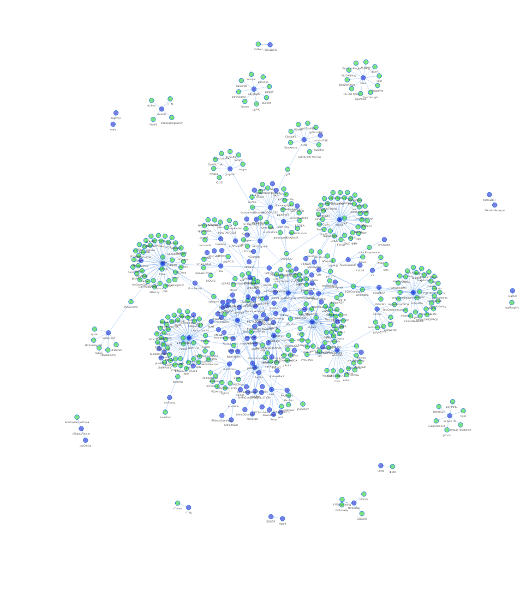
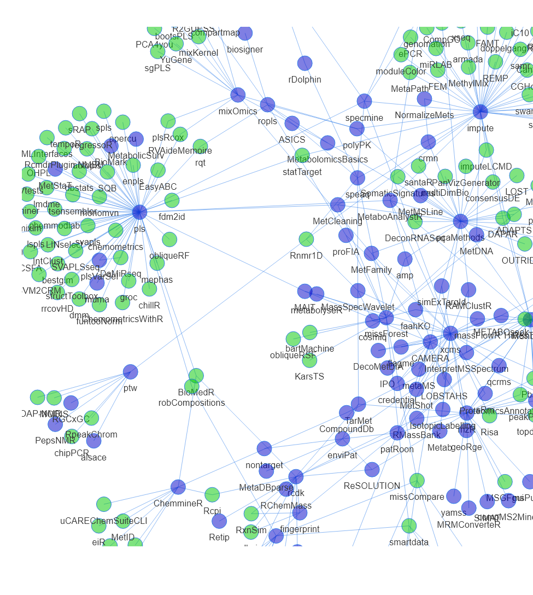

Appendix 2: metaRbolomics dependencies network
Libraries and settings
options("repos" = list(CRAN="http://cran.rstudio.com/"))
library(devtools) # for revdp()
library(igraph) # for graph_from_edgelist/( and simplify() )
library(visNetwork) # for visNetwork() and friends
library(networkD3) # for saveNetwork()
library(chromote) # for default_chromote_object()
library(webshot2) # for webshot()
library(png) # For displaying an image
library(dplyr)
library(purrr)
source("revDepNetHelper.R")
set_default_chromote_object(Chromote$new(browser = Chrome$new(args = "--no-sandbox")))Read package names from our table
Get reverse dependencies
For CRAN and BioC packages
For GitHub and GitLab
The above devtools::revdep cannot read from GitHub/GitLab repositories.
We have a helper function that downloads and parses the DESCRIPTION file from GitHub/GitLab.
Since we cannot get reverse dependencies directly for GitHub/GitLab packages, those packages they are only used as additional reverse depedencies for the CRAN/BioC packages.
gitdeps_reverse <- reviewTables %>%
mutate(dep_tree = map(Code_link, get_git_deps)) %>%
pull(dep_tree) %>%
bind_rows() %>%
filter(Dep %in% el[,"Package"]) %>%
rename(Package = Dep, ReverseDep = Package) %>%
as.matrix()## Warning in readLines(file): incomplete final line found on 'C:
## \Users\jan\AppData\Local\Temp\RtmpEDPsdD\file2608741d5080'## Warning in readLines(file): incomplete final line found on 'C:
## \Users\jan\AppData\Local\Temp\RtmpEDPsdD\file2608107d657d'Building dependency network
In total, we were analysing 288 packages.
For each package, this returns the set of packages in CRAN or BioC that depend on, import from or link to the package (i.e., its direct reverse dependencies) using the devtools::revdep() function. A few packages with the highest number of reverse dependencies have been excluded, as they would dominate the visualisation.
It was not possible to detect reverse dependencies from other hosting places such as GitHub or GitLab.
From the total, 65 packages had at least one such reverse dependency.
## Remove packages with most reverse dependencies
## which would dominate the network
el <- el[! el[,"Package"] %in% c("Rcpp", "igraph", "vegan", "caret", "rJava", "reticulate"), ]
## Create graph, and simplify redundancy
g <- graph_from_edgelist(el, directed = TRUE)
g <- igraph::simplify(g, remove.multiple = TRUE, remove.loops = TRUE)
# get data and plot :
data <- toVisNetworkData(g)
data$nodes <- cbind(data$nodes,
font.size=30,
color.background = ifelse(data$nodes[,"id"] %in% pkgs ,
rgb(0, 0, 200, 128, max = 255),
rgb(0, 200, 0, 128, max = 255)))
vn <- visNetwork(nodes = data$nodes,
edges = data$edges,
width=1000, height=1000) %>%
visPhysics(timestep = 0.3,
barnesHut = list(centralGravity=0.35,
springLength = 95)) %>%
visOptions(highlightNearest = TRUE)
vnFigure S1: Dependency network of R packages. Shown in blue are packages mentioned in the review. Edges connect to packages that depend on another package, as long as that is in CRAN or BioC. Green nodes correspond to packages in CRAN or BioC not covered in the review. Not shown are 1) infrastructure packages e.g. rJava, Rcpp 2) packages from the review without reverse dependencies and 3) data packages. Some packages from the review are not in current versions of CRAN or BioC. An interactive version of this figure is available from https://stanstrup.gitlab.io/metaRbolomics-book/appendix-2-metarbolomics-dependencies-network.html.
Save network plot

vnZoom <- visNetwork(nodes = data$nodes,
edges = data$edges,
width=1000, height=1000) %>%
visIgraphLayout()%>%
visEvents(type="once", startStabilizing = 'function() {
this.fit({nodes:["ptw", "Rnmr1D", "RpeakChrom", "alsace",
"PepsNMR", "ASICS", "MODIS", "RGCxGC"]})
}')
saveNetwork(vnZoom, "vnZoom.html")
webshot("vnZoom.html", "revDepNet-zoom.png", delay = 5)
You ca access the files at:
{kind=link}
{kind=link}
Notes
The source code for this page is on GitHub at gitlab.com/stanstrup/metaRbolomics-book
The HTML output is shown at https://stanstrup.gitlab.io/metaRbolomics-book/appendix-2-metarbolomics-dependencies-network.html
and https://stanstrup.gitlab.io/metaRbolomics-book/vn.html (Caveat: long rendering time, blank page without any visible progress)
This page was created with the following packages:
## R version 3.5.2 (2018-12-20)
## Platform: x86_64-w64-mingw32/x64 (64-bit)
## Running under: Windows >= 8 x64 (build 9200)
##
## Matrix products: default
##
## locale:
## [1] LC_COLLATE=English_United States.1252
## [2] LC_CTYPE=English_United States.1252
## [3] LC_MONETARY=English_United States.1252
## [4] LC_NUMERIC=C
## [5] LC_TIME=English_United States.1252
##
## attached base packages:
## [1] stats graphics grDevices utils datasets methods base
##
## other attached packages:
## [1] magrittr_1.5 miniCRAN_0.2.12 desc_1.2.0
## [4] png_0.1-7 webshot2_0.0.0.9000 chromote_0.0.0.9001
## [7] networkD3_0.4 visNetwork_2.0.8 igraph_1.2.4.1
## [10] devtools_2.1.0 usethis_1.5.1 tikzDevice_0.12.3
## [13] purrr_0.3.2 kableExtra_1.1.0.9000 dplyr_0.8.3
## [16] DT_0.8 readr_1.3.1 knitr_1.24
##
## loaded via a namespace (and not attached):
## [1] httr_1.4.1 pkgload_1.0.2 jsonlite_1.6
## [4] viridisLite_0.3.0 shiny_1.3.2 assertthat_0.2.1
## [7] BiocManager_1.30.4 yaml_2.2.0 remotes_2.1.0
## [10] sessioninfo_1.1.1 pillar_1.4.2 backports_1.1.4
## [13] glue_1.3.1 digest_0.6.20 promises_1.0.1.9002
## [16] rvest_0.3.4 colorspace_1.4-1 websocket_1.1.0
## [19] htmltools_0.3.6 httpuv_1.5.1 XML_3.98-1.20
## [22] pkgconfig_2.0.2 bookdown_0.13 xtable_1.8-4
## [25] scales_1.0.0 webshot_0.5.1 processx_3.4.1
## [28] later_0.8.0.9003 tibble_2.1.3 withr_2.1.2
## [31] cli_1.1.0 crayon_1.3.4 mime_0.7
## [34] memoise_1.1.0 evaluate_0.14 ps_1.3.0
## [37] fs_1.3.1 xml2_1.2.2 pkgbuild_1.0.5
## [40] tools_3.5.2 prettyunits_1.0.2 hms_0.5.1
## [43] stringr_1.4.0 munsell_0.5.0 callr_3.3.1
## [46] compiler_3.5.2 rlang_0.4.0 grid_3.5.2
## [49] rstudioapi_0.10 htmlwidgets_1.3 filehash_2.4-2
## [52] crosstalk_1.0.0 rmarkdown_1.15 testthat_2.2.1
## [55] codetools_0.2-15 curl_4.0 R6_2.4.0
## [58] fastmap_1.0.0 zeallot_0.1.0 rprojroot_1.3-2
## [61] stringi_1.4.3 Rcpp_1.0.2 vctrs_0.2.0
## [64] tidyselect_0.2.5 xfun_0.9